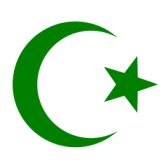

USKONTOOPPIMATERIAALIA NETISSÄ VUODESTA 1999 LÄHTIENPSYKOLOGIAN PIKALINKIT PSYKAN VIDEOABIKURSSI: PS7 ABI KERTAUSKURSSI (OPS 2016-): PS1 Psyykkinen toiminta ja oppiminen PS2 Kehittyvä ihminen PS3 Tietoa käsittelevä ihminen PS4 Tunteet, psyykkinen hyvinvointi ja mielenterveys PS5 Yksilöllinen ja yhteisöllinen ihminen Uskonto: UE1 UE2 UE3 UE4 UE5 UE6 Filosofia: FI1 FI2 FI3 FI4 FI5 Suomessa ei juurikaan upeita moskeijoita ja minareetteja näy. Suomalaiset moskeijat ovat mm. kerrostalojen huoneistoissa tai muissa laajoissa tiloissa. Suomen muslimit noudattavat Turkin kalenterirytmiä mm. paastotessaan. Kuvan kortin ostin Istanbulista ja siinä näkyy hienosti sekä maailmankuulu Sininen Moskeija (etualalla) että muinoinen Konstantinopolin patriarkan pääkirkko Hagia Sofia, joka nykyisin toimii lähinnä moskeijana sekä kirkko- että moskeijamuseona. SUOMEN USKONNOLLINEN KENTTÄ (linkit sivustoni teksteihin): SUURIMPIA: Suomen evankelis-luterilainen kirkko Suomen ortodoksinen kirkko Suomen helluntaiherätys Islam Jehovan todistajat Suomen Vapaakirkko Katolinen kirkko Suomessa Suomen Adventtikirkko Mormonit MUITA KRISTILLISIÄ OSIN RYHMITELTYNÄ: Pelastusarmeija Anglikaanit Baptismi Metodismi Evankelikaalisia Karismaattisia Muita luterilaisia ja kristillisiä MUITA USKONNOLLISIA YHTEISÖJÄ OSIN RYHMITELTYNÄ: Krist.vaikutteisia Buddhalaisuus Juutalaisuus Hindulaisperäisiä Synkretistisiä Muita |
Islam
Islamopas
Tampereen islamilainen seurakunta Suomen islamilainen yhdyskunta Perusopetuksen muiden uskontojen opetussuunnitelmat - sivuilla 24-27 islam
• Suomeen turkkilais-tataarikauppiaitten mukana 1800-luvun lopulla 
- omien perinteiden noudattaminen on hyvin keskeistä, erityisesti viiden peruspilarin (ks. alempana) noudattamista pidetään tärkeänä. Samoin perheen sisäiset roolit, vanhempien kunnioitus, sekä monet muut tavat ovat tärkeitä.- perinteitä ovat myös ns. siveys ja pukeutumissäännökset: naisten ja miesten pukeutumissäännöt, wc:ssä käynnin yhteydessä tulee toimittaa aina alapesu vedellä, pelkkä paperi ei riitä (mihin suomalaisina olemme tottuneet); naiset eivät saa näyttäytyä miesten tai poikien nähden uimapuvussa; musliminainen ei ota vastaan miesvieraita (paitsi sukulaismiehiä) oman miehensä ollessa pois kotoa; miehiä ei katsota silmiin; mikäli mies ja nainen, jotka eivät ole sukulaisia tai aviopari, joutuvat huoneeseen kahdestaan, jättävät he oven auki. - muslimipojat ympärileikataan 3-13 vuotiaina. Somalipakolaiset tulevat alueelta, jossa on käytössä yleiseen muslimiperinteeseen kuulumaton tyttöjen ympärileikkaus. Erityisesti tyttöjen ympärileikkausta on vastustettu länsimaissa sen terveysriskien vuoksi. - esim. ruokaillessa ei syödä sianlihaa, käytetään vain oikeaa kättä (ei siis veistä ja haarukkaa), ennen ruokailua suoritetaan siunaus "Jumalan nimeen". Suomalaiset muslimit lausuvat rukoukset arabiaksi. • Omat moskeijat ja omaa uskonnonopetusta - Suomessa on kaikkiaan jo n.40 moskeijayhteisöä ja kymmeniä rekisteröityneitä ja todennäköisesti myös kymmeniä rekisteröitymättömiä seurakuntia - uskonnollisena kielenä on arabia - muslimit saavat nykyisin oman uskontonsa mukaista uskonnonopetusta peruskouluissa ja lukioissa (opetussuunnitelmissa siis uskoinnoilla oma ns. uskonnon OPS). • Islamin opin perustana on Muhammedin sanoista koottu Koraani - Muhammed syntyi v. 570 j.Kr. rikkaaseen mekkalaiseen perheeseen, mutta jäi orvoksi ja setänsä kasvatettavaksi jo kuusi vuotiaana. 25-vuotiaana Muhammed meni naimisiin rikkaan lesken, Khadidzan kanssa. Noin 40-vuotiaana Muhammed alkoi saada ilmestyksiä enkeli Gabrielilta, joka opetti Muhammedille oikean uskon. Muhammed uskoi, että Gabriel toi viestit ilmestyksiin taivaallisesta kirjasta suoraan Allahin luota. Koraani koottiin lopullisesti joitakin vuosia Muhammedin kuoleman jälkeen ja siitä hyväksytään alkuperäiseksi vain arabialainen painos. Esimerkiksi Koraanin suomennos on vain "kommentaari" oikeasta Koraanista. Arabiankielinen Koraani on suora kopio taivaassa olevasta. - Muhammed alkoi opettaa oppiaan, mutta häntä alettiin vainoamaan ja niinpä hän pakeni vuonna 622 Mekasta Medinaan (ns. hidzra, josta lasketaan islamilainen ajanlasku). Medinaan Muhammed perusti ensimmäisen muslimiyhteisön. Muhammed sai yhä enemmän kannatusta sekä Medinassa että Mekassa ja kävi myös jatkuvasti sotia Mekkaa vastaan, niinpä hän v. 630 marssi Mekkaan juhlittuna johtajana. Muhammed kuoli v. 632. Muhammedin kuoleman jälkeen johtoon nousivat Muhammedin läheiset ystävät, joita johtajina alettiin kutsua kalifeiksi. - Koraani on jaettu 114 suuraan ,jotka eivät ole temaattisessa eivätkä kronologisessa järjestyksessä vaan laajuusjärjestyksessä siten, että ensimmäisenä on lyhin ja tärkein suura, sitten pisin, sitten toiseksi pisin ja viimeisenä eli 114. suura on Koraanin toiseksi lyhin. - Koraanin ohella kunnioitetaan sunnaa eli perimätietoa, johon on koottu Muhammedin opetuksia ja on esikuvallista ensimmäisten muslimien elämäntavasta. - Koraanista ja sunnasta etsitään neuvot elämään ja vastaukset uusien elämäntilanteiden tuomiin ongelmiin. Mikäli näistä ei löydy neuvoja, turvaudutaan "umman" eli islamilaisen yhteisön päätökseen (ratkaisuun asiassa). Umma kattaa kaikki maailman muslimit ja umman uskonnollista määräystä, fatwaa, tulisi kaikkien muslimien totella. Tunnettu fatwa on mm. ajatollah Khomeinin elämänsä aikana antama kuolemantuomio kirjailija Salman Rushdielle kirjansa Saatanalliset säkeet johdosta. • Uskon peruspilarit: uskontunnustus, rukous, almut, paasto, pyhiinvaellus - 1) Uskontunnustus: "Ei ole muuta jumalaa kuin Jumala (Allah) ja Muhammed on hänen profeettansa" - 2) rukous (salat eli selän taivuttaminen), viisi kertaa vuorokaudessa Mekkaa kohti - 3) almut köyhäinhoitoverona - 4) paasto Ramadanin aikana, Ramadanin vietto huipentuu uuden kuun (kuun sirppi taivaalla) juhlaan, "Idiin" eli Id-ul-Fitriin, jolloin ihmiset rientävät kaduille juhlimaan paaston loppumista, tuolloin pukeudutaan parhaisiin juhlavaatteisiin, annetaan lahjoja ystäville sekä almuja köyhille, käydään sukulaisten haudoilla. - 5) pyhiinvaellus Mekkaan kerran elämän aikana, pyhiinvaellukseen kuuluu paljon muutakin kuin Kaaban temppelissä käynti. Matkaan yhdistetään tavallisesti useita vierailuja pyhillä paikoilla sekä Mekassa että Medinassa (mm. Muhammedin haudalla vierailu). - kuudenneksi (6) ylimääräiseksi velvollisuudeksi on luettu pyhä sota, jota muslimit, riippuen tulkinnasta, noudattavat joko kirjaimellisesti sotana tai mystisemmin sisäisenä taisteluna pahuutta vastaan. |